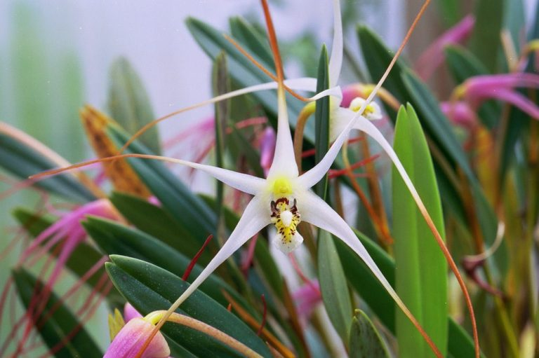

Anggrek serat adalah salah satu tumbuhan endemik Indonesia. Tumbuhan ini menjadi flora identitas Provinsi Sulawesi Tenggara.Anggrek serat termasuk dalam suku ''Orchidaceae''.
Nama ilmiah anggrek serat adalah Dendrobium utile dan sinonimnya adalah Diplocaulobium utile. Nama anggrek serat dalam bahasa lokal Sulawesi adalah anomi, anemi atau alemi.
Tumbuhan ini bernama anggrek serat karena umbi semu dari tanaman ini mengandung serat yang kadang serat tersebut dimanfaatkan untuk bahan anyaman.